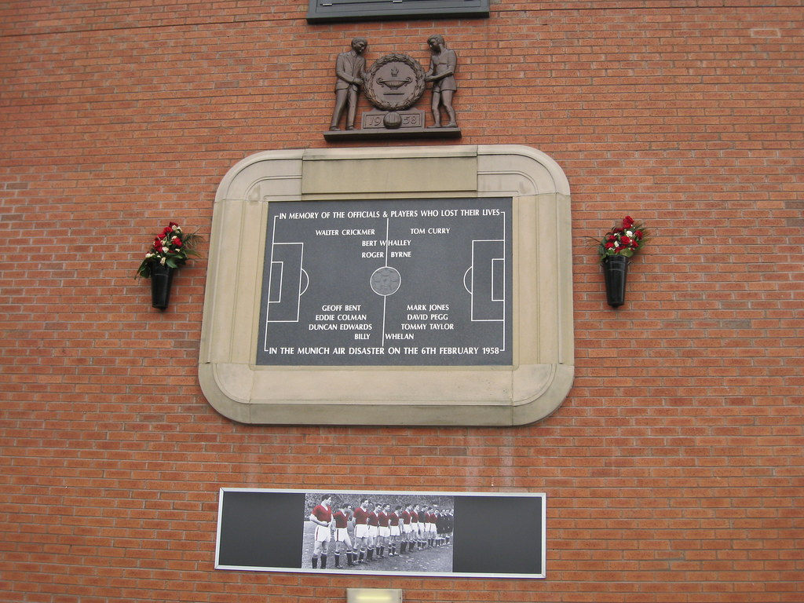

On February 6th, 1958 the course of Manchester United history was changed forever. The team had just finished playing in a European Cup match in Serbia. The plane needed to stop in order to refuel for the rest of the flight back home. The plane landed in Munich in order to refuel and the weather was not favorable for a takeoff afterwards. In fact there was much discussion about staying overnight and trying the next day. The crew decided to go ahead with takeoff but the plane was never able to lift off the runway due to the slush affecting their speed. They went off the end of the runway hitting a building with a truck in it that exploded on impact. Twenty-three people died as a result of this crash. Multiple players decided to never play again after the experience and to this day we all recognize and pay our respects to the victims of this horrendous disaster. It is not only a tragedy for Manchester United as it impacted every team worldwide.
